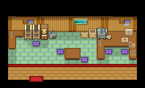
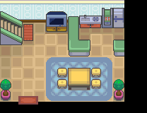

062 满金Cos大会！？
一句话目标：说服桧皮镇的老匠人钢铁先生，为孙女做出参赛的 Cosplay 服装，并一路参加满金市的 CosPlay 大会。
接取地点
- 桧皮镇（地图 g47_n002），人物 localId 3，坐标约 (4,5)，即镇上的老匠人钢铁先生。
准备条件
- 先完成「头号球迷的朝圣」：钢铁先生的入口脚本会先检查该任务的完成旗标，之后才会进入本任务。
- 需要一枚粉球果（道具 617）：他以此为做球的材料，也是做出 Cosplay 服装的关键。没有粉球果无法推进。
操作步骤
- 在桧皮镇与钢铁先生交谈。他起初不情愿：「哦，是[玩家]啊。你也是来劝我的？哼，现在的年轻人太浮躁了。」随后提示「接受任务:<满金CosPlay大会!?>」，并提出条件：「……不过，如果你真想帮这丫头，就去给我找一个粉球果来。我正好需要它做一个特别的球。没有粉球果，一切免谈！」
- 去取得 1 枚粉球果（道具 617），带在身上回到钢铁先生处。若身上没有，他只会重复上面那句催讨台词。
- 交出粉球果（会被消耗 1 枚）。他动工做出服装：孙女惊呼「哇……」「我最喜欢爷爷了！！」，他自夸：「绝赞！粉球果的汁液染出的颜色，完美还原了呆呆兽那充满大智若愚气质的粉色！这才是我们桧皮镇的最强 Cosplay！穿着这个去惊艳全场吧！」
- 他随即反问玩家要不要也参加：「这可是难得的盛会，老夫看你骨骼清奇，难道你没有参加的意向吗？」并点拨：「真正的 Cosplay 不需要多么奢华，只要能唤起大家心中最初的感动与共鸣，就是最棒的作品！」随后提示「[玩家]似乎想到了什么……也许该回若叶镇的家，去问问妈妈？」，并把玩家送回桧皮镇。
- 回若叶镇（地图 g43_n000）的家中找妈妈，触发本任务的下一步处理。
- 前往满金市参加 CosPlay 大会（大会正篇的演出脚本未展开）。
- 大会结算场景自动播放，主持人式的角色赞道：「真是太精彩了！作为本次大赛的冠军，这是属于你的特别奖励！」随后玩家获得图图犬。
- 场景中依次出现三段对白：图图犬粉丝的赞叹（「连边缘都带着锯齿……真是最喜欢了啊！！」）、孙女的祝贺（「恭喜你拿下冠军！虽然我的粉球果呆呆兽没能赢……」）、钢铁先生的感慨（「输得心服口服！……仿佛又变回了那个一天能敲一百个球果的年轻小伙子！」）。
- 钢铁先生道谢并承诺：「下次来桧皮镇，我一定会为你亲手打造出最棒的特制球！」场景结束，提示「完成任务:<满金CosPlay大会!?>」，并传送回桧皮镇。
交付检查
- 完成（complete）旗标被设置。
- 结算出现「完成任务:<满金CosPlay大会!?>」，结束后传送回桧皮镇。
奖励
- 图图犬（../pokemon/1404.md），Lv20，直接赠送入队。
- 无金钱 / BracerPoints 记录。
- 注意：结算场景开头另有一条「完成任务:<8bit的感动>」提示，那是相邻任务 063 的文本，不是本任务的奖励。
容易卡住的位置
- 未完成「头号球迷的朝圣」时，钢铁先生不会进入本任务。
- 粉球果是硬性门槛：没有它接不了正式委托，也做不出服装。
- 钢铁先生让玩家「回若叶镇问妈妈」后，本任务在该处由任务处理程序接管（该段脚本未展开）。
- 满金市大会会场在市区内的具体位置未定位。
来源与待补字段
技术证据
- 来源：quest_catalog 第 62 行；入口 root 桧皮镇 0x08EE4638、若叶镇 0x08A68500；接取/推进脚本 0x09CD82F3（accept）、0x09CD836A（checkitem 617）、0x09CD83A0（交粉球果→做服装→回若叶镇提示）、0x087B9808 / 0x087B982B（若叶镇侧处理）；结算脚本 0x09CD8C18。
- 接受旗标 5175、中途旗标 5176、完成旗标 5177；交出/消耗道具 617。
- 待补：满金市大会会场地图；第 5 步若叶镇妈妈处任务处理脚本（setvar 0x8004=108 所指向的处理程序）。
地点地图
共享RGB底图；点击可缩放定位。数字对应本页相关地点，不代表地图上全部事件。
桧皮镇

1 满金Cos大会！？（4,5） 底图有2个图块缺少原始数据。
若叶镇

地图范围记录：当前资料没有精确人物／遭遇坐标。